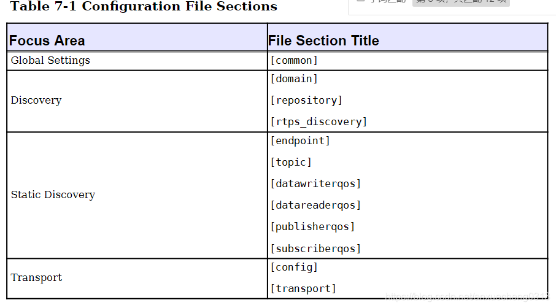

6.4.1.4. opendds配置选项

配置文件应用示例
./publisher -DCPSConfigFile pub.ini
指令参数将在domain participant factor初始化时传递．
#include <dds/DCPS/Server_Participant.h>
int main(int argc, char* argv[])
{
DDS::DomainParticipantFactory_var dpf = TheParticipantFactoryWithArgs(argc, argv);
}
配置文件内容示例
[conmon]
DCPSDebugLevel=0
DCPSInfoRepo=localhost:12345
DCPSLivelinessFactory=80
DCPSChunks=20
DCPSChunksAssociationMultiplier=10
DCPSBitLookupDurationMesc=2000
DCPSPendingTimeout=30
6.4.1.4.1. Global Setting
6.4.1.4.1.1. [common]
配置选项 |
描述 |
默认值 |
DCPSBit=[1|0] |
切换内置主题支持 |
1 |
DCPSBItLookupDurationMsec=msec |
解读当前实例所给出的topic的最长持续时间 |
2000ms |
DCPSBitTransportIPAddress=addr |
设定tcp传输的ip地址, 只对DCPSInfoRepo设定有效 |
INADDR_ANY |
DCPSBitTransportPort=port |
TCP传输中端口号设定，如果使用默认值0，则操作系统来选择要使用的端口，只对DCPSInfoRepo设定有效 |
0 |
DCPSChunks=n |
当RESOURCE_LIMITS Qos值为无穷大时，数据写入者和读取者的缓存分配器将预分配的块的可配置数量．当所 有预分配的块都在使用时，opendds从堆中进行分配 |
20 |
DCPSChunkAssociationMultiplier=n |
与DCPSChunks或resource_limits.max_samples相乘的值，以确定已预先分配的浅拷贝块的总数． |
10 |
DCPSDebugLevel=n |
控制DCPS层打印的调试信息量的整数值．有效值0-10． |
0 |
DCPSDefaultAddress=addr |
||
DCPSDefaultDiscovery=[] |
指定用于未明确配置的任何域的发现配置．可选值为DEFAULT_REPO|DEFAULT_REPS|DEFAULT_STATIC |
DEFAULT_REPO |
DCPSGlobalTransportConfig=name |
设置应该用作全局配置的传输配置的名称 |
|
DCPSInfoRepo=objref |
用于查找DCPS信息存储库的对象引用，可以是完整的CORBA IOR也可以是简单的host: port字符串 |
|
DCPSLivelinessFactory=n |
||
DCPSMonitor=[0|1] |
使用OpenDDS_Monitor库发布有关监视主题的数据 |
0 |
DCPSPendingTimeout=sec |
数据写入器将阻塞的最大持续时间(以秒为单位) |
0 |
DCPSPersistentDataDir=path |
文件系统上将存储持久数据的路径，如果不存在将自动创建 |
|
DCPSPublisherContentFilter=[1|0] |
控制内容过滤主题的过滤器表达式评估策略，启用后，如果所有订阅者都将忽略这些样本，则发布者可以将样 本移交给传输之前丢弃样本 |
1 |
DCPSSecurity=[0|1] |
仅在启用dds安全性的情况下编译opendds时，此配置才有效 |
0 |
pool_size=n_bytes |
安全配置文件存储池的大小，以字节为单位 |
41943040(40 MiB) |
pool_granularity=n_bytes |
安全配置文件存储池的粒度(以字节为单位)，必须是8的倍数 |
8 |
Scheduler=[] |
选择要使用的线程调度器，可选值SCHED_RR|SCHED_FIFO|SCHED_OTHER |
SCHED_OTHER |
scheduler_slice=usec |
某些操作系统需要设置时间片 |
|
DCPSBidirGIOP=[0|1] |
使用TAO的双向GIOP功能与DCPSInfoRepo进行交互 |
1 |
6.4.1.4.2. Discovery
6.4.1.4.2.1. [domain/*]
配置选项 |
描述 |
默认值 |
DomainId=n |
表示与存储库关联的域的整数值 |
|
DomainRepoKey=k |
映射的存储库的键值(不推荐使用) |
|
DiscoveryConfig=name |
用户定义的字符串，它引用同一配置文件中[repository]或[rtps_discovery]节的实例名称 |
|
DefaultTransportConfig=config |
用户定义的字符串，它引用[config]节的实例名称 |
6.4.1.4.2.2. [repository/*]
配置选项 |
描述 |
默认值 |
Repositorylor=ior |
存储库IOR或host: port |
|
RepositoryKey=key |
存储库的唯一键值(不推荐使用，为向后兼容而提供) |
6.4.1.4.2.3. [rtps_discovery/*]
配置选项 |
描述 |
默认值 |
ResendPeriod=sec |
参与者公告之间进程等待的秒数 |
30 |
MinResendDelay=msec |
参与者公告之间的最短时间(以毫秒为单位) |
100 |
QuickResendRatio |
配置本地SDPD重发的调整参数(重发周期的比率) |
0.1 |
LeaseDuration=sec |
作为参与者发送公告的一部分，它告诉对等参与者，如果在指定的持续时间内没有收到该参与者的消息，则 可以认为该参与者”没有生命” |
300 |
PB=port |
端口基本号，此数字设置派生用于简单断点发现协议(SEDP)的端口号的起点，此属性与DG,PG,D0(或DX)和D1 结合使用，以构造用于RTPS发现通信的必要端点 |
7400 |
DG=n |
表示域增益的整数值，这是一个乘法器，有助于RTPS指定多播或单播端口 |
250 |
PG=n |
配置SPDP单播端口并用作偏移乘数，地址=PB+DG*dimainid+d1+PG*particatorid |
2 |
D0=n |
SPDP Multicast配置中提供用于计算可分配端口的偏移量，公式为PB+DG*domainid+d0 |
0 |
D1=n |
SPDP Unicast配置中提供用于计算可分配端口的偏移量，公式PB+DG*dimainid+d1+PG*particatorid |
10 |
SedpMaxMessageSize |
设置SEDP消息大小，默认值为最大UDP消息大小 |
65466 |
SedpMulticast=[0|1] |
设置是否将多播用于SEDP通信，1为多播 |
1 |
SedpLocalAddress=addr:port |
配置SEDP绑定的本地地址和端口 |
6.4.1.4.3. Static Discovery
6.4.1.4.3.1. [endpoint/*]
配置选项 |
描述 |
默认值 |
domain=numeric |
端点的域ID,范围为0-231,用于形成端点的GUID |
|
participant=hexstring |
12个十六进制数字的字符串，用于形成端点的GUID |
|
entity=hexstring |
6个十六进制数字的字符串，用于形成端点GUID |
|
type=[reader|writer] |
确定实体是数据读取器还是写入器 |
|
topic=name |
||
datawriterqos=name |
||
datareaderqos=name |
||
publisherqos=name |
||
subscriberqos=name |
||
config |
6.4.1.4.3.2. [topic/*]
配置选项 |
描述 |
默认值 |
name=string |
topic的名称 |
|
type_name=string |
唯一定义topic类型的标识符，通常是CORBA接口存储库类型名称 |
Required |
6.4.1.4.3.3. [datawriterqos/*]
配置选项 |
描述 |
默认值 |
6.4.1.4.3.4. [datareaderqos/*]
配置选项 |
描述 |
默认值 |
6.4.1.4.3.5. [publisherqos/*]
配置选项 |
描述 |
默认值 |
6.4.1.4.3.6. [subscriberqos/*]
配置选项 |
描述 |
默认值 |
6.4.1.4.4. [Transport/*]
配置选项 |
描述 |
默认值 |
Transport=inst1[,inst2][,…] |
此配置将使用的 |
|
swap_bytes=[0|1] |
值为0时dds以源计算机的本机字节序对数据进行序列化 |
0 |
passive_connect_duration=msec |
初始被动连接建立的超时(毫秒) |
10000 |
6.4.1.4.4.1. [Common Transport Configuration Options]
配置选项 |
描述 |
默认值 |
transport_type=transport |
传输类型，tcp, udp, multicast, shmem, rtps_udp等 |
|
queue_messages_per_pool=n |
当检测到backpressure时，消息发送将要排队，当队列必须增长时，它将以该数字增长 |
10 |
queue_initial_pools=n |
backpressure队列的初始池数 |
5 |
max_packet_size=n |
传输数据包的最大大小 |
2147481599 |
max_samples_per_packet=n |
传输数据包中的最大样本数 |
10 |
optimum_packet_size=n |
即使仍然有排队的样本要发送，大于此大小的传输数据包也会发送 |
4096(4k) |
thread_per_connection=[0|1] |
启用或禁用每个连接发送策略的线程 |
0 |
datalink_release_delay=msec |
设置没有关联后数据链路释放的延迟 |
10000 |
6.4.1.4.4.2. [TCP/IP Configuration Options]
配置选项 |
描述 |
默认值 |
active_conn_timeout_period=msec |
活动连接侧等待建立连接的时间段(毫秒),如果在此期间未连接，则将调用on_publication_lost()回调 |
5000 |
conn_retry_attempts=n |
丢弃并调用on_publication_lost和on_subscription_lost回调之前尝试重新连接的次数 |
3 |
conn_retry_initial_delay=msec |
尝试重新链接的初始延迟 |
500 |
conn_retry_backoff_multiplier=n |
尝试重新连接的退避乘数 |
2 |
enable_nagle_algorithm=[0|1] |
启用或禁用Nagle算法，启用Nagle算法会增加吞吐量，但会增加延迟 |
0 |
local_address=host:port |
连接接收器的主机名和端口 |
fqdn:0 |
max_output_pause_period=msec |
排队中消息无法发送的最长时间(毫秒) |
0 |
passive_reconnect_duration=msec |
被动连接端等待重新连接的时间段 |
2000 |
pub_address=host:port |
用配置的字符串覆盖发送给对等方的地址，可用于防火墙穿透和其他高级网络配置 |
6.4.1.4.4.3. [UDP/IP Configuration Options]
配置选项 |
描述 |
默认值 |
local_address=host:port |
监听套接字的主机名和端口 |
fqdn:0 |
send_buffer_size=n |
用于UDP有效负载的总发送缓冲区大小(以字节为单位) |
|
rcv_buffer_size=n |
用于UDP有效负载的总接收缓冲区大小(以字节为单位) |
6.4.1.4.4.4. [IP Multicast Configuration Options]
配置选项 |
描述 |
默认值 |
default_to_ipv6=[0|1] |
启用IPV6默认组地址选择 |
0 |
group_address=host:port |
要加入发送/接收数据的多播组 |
224.0.0.128:<port> |
local_address=address |
如果为非空，则为用于加入多播组的本地网络接口的地址 |
|
nak_delay_intervals=n |
初始化nak之后nak之间的间隔数 |
4 |
nak_depth=n |
为了service repair requests而保留的数据报数 |
32 |
nak_interval=msec |
两次修复请求之间等待的最小毫秒数 |
500 |
nak_max=n |
||
nak_timeout=msec |
放弃维修响应之前等待时间 |
30000 |
port_offset=n |
未指定组地址时用于设置端口号，此值不应设置为小于49152 |
49152 |
rcv_buffer_size=n |
socket接收缓冲区大小,0使用系统默认值 |
0 |
reliable=[0|1] |
使能可靠的通信 |
1 |
syn_backoff=n |
握手重试期间使用的指数基,较小的值会缩短尝试之间的延迟 |
2.0 |
syn_interval=msec |
关联期间，等待握手尝试的最小毫秒数 |
250 |
syn_timeout=msec |
关联期间，放弃握手响应之前要等待的最大毫秒数 |
30000 |
ttl=n |
发送任何数据包的生存时间(ttl)字段,默认值为1表示所有数据都限于本地网络 |
1 |
async_send=[0|1] |
使用异步I/O发送数据报 |
6.4.1.4.4.5. [RTPS_UDP Configuration Options]
配置选项 |
描述 |
默认值 |
use_multicast=[0|1] |
rtps_udp传输可以使用单播或多播，默认使用多播 |
1 |
multicast_group_address=address |
传输设置为多播时，应使用多播网络地址．如果未指定网络端口号，则使用7401 |
239.255.0.2:7401 |
multicast_interface=iface |
指定传输实例要使用的网络接口,linux系统中可以使用eth0 |
|
local_address=addr:port |
指定地址和端口 |
|
nak_depth-n |
为service repair requests而保留的数据报数 |
32 |
nak_response_delay=msec |
允许rtps writer针对数据请求延迟否定确定的响应 |
200 |
heartbeat_period=msec |
rtps writer公告数据可用性频率 |
1000 |
heartbeat_response_delay=msec |
rtps reader延迟发送肯定或否定确认 |
500 |
handshake_timeout=msec |
关联期间放弃握手响应之前要等待的最大毫秒数 |
30000 |
max_message_size |
最大消息大小，默认值为最大UDP消息大小 |
65466 |
quick_reply_ratio |
用于控制相对于heartbeat_period和heartbeat_response_delay的新公告发生速度 |
0.1 |
ttl=n |
发送的任何多播数据报的生存时间 |
1 |
DataRtpsRelayAddress=host:port |
指定用于rtps消息的rtpsrelay地址 |
|
RtpsRelayOnly=[0|1] |
仅将消息发送到rtpsrelay(用于调试) |
0 |